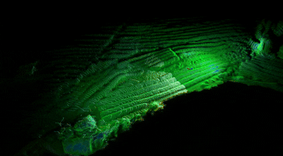

| Scene | Sequence | Scanning Mode | Altitude (m) | Speed (m/s) | Path Length (m) |
|---|---|---|---|---|---|
| Flat Farmland | NJFlatB01 | boundary | 5 | 3 | 434.77 |
| NJFlatB02 | boundary | 5 | 8 | 464.21 | |
| NJFlatB03 | boundary | 10 | 3 | 456.32 | |
| NJFlatB04 | boundary | 10 | 8 | 462.18 | |
| NJFlatB05 | boundary | 15 | 3 | 465.89 | |
| NJFlatB06 | boundary | 15 | 8 | 454.21 | |
| NJFlatC01 | coverage | 5 | 8 | 805.65 | |
| NJFlatC02 | coverage | 10 | 3 | 801.17 | |
| NJFlatC03 | coverage | 10 | 8 | 798.96 | |
| NJFlatC04 | coverage | 15 | 3 | 822.23 | |
| Hilly Farmland | NJHillB01 | boundary | 8 | 3 | 490.61 |
| NJHillB02 | boundary | 8 | 8 | 493.07 | |
| NJHillB03 | boundary | 13 | 3 | 480.98 | |
| NJHillB04 | boundary | 13 | 8 | 484.60 | |
| NJHillB05 | boundary | 18 | 3 | 483.84 | |
| NJHillB06 | boundary | 18 | 8 | 488.41 | |
| NJHillC01 | coverage | 8 | 3 | 776.47 | |
| NJHillC02 | coverage | 8 | 8 | 783.31 | |
| NJHillC03 | coverage | 13 | 3 | 761.55 | |
| NJHillC04 | coverage | 13 | 8 | 768.14 | |
| NJHillC05 | coverage | 18 | 3 | 756.07 | |
| NJHillC06 | coverage | 18 | 8 | 769.94 | |
| Terraced Farmland | NJTerrB01 | boundary | 3 | 3 | 204.91 |
| NJTerrB02 | boundary | 6 | 3 | 207.21 | |
| NJTerrB03 | boundary | 6 | 6 | 209.71 | |
| NJTerrB04 | boundary | 9 | 3 | 211.95 | |
| NJTerrB05 | boundary | 9 | 6 | 215.72 | |
| NJTerrC01 | coverage | 3 | 3 | 311.23 | |
| NJTerrC02 | coverage | 3 | 6 | 307.53 | |
| NJTerrC03 | coverage | 6 | 3 | 311.24 | |
| NJTerrC04 | coverage | 6 | 6 | 300.84 | |
| NJTerrC05 | coverage | 9 | 3 | 313.64 | |
| NJTerrC06 | coverage | 9 | 6 | 317.48 |
Flat Farmland
Hilly Farmland
Terraced Farmland
LiDAR
4D Radar


